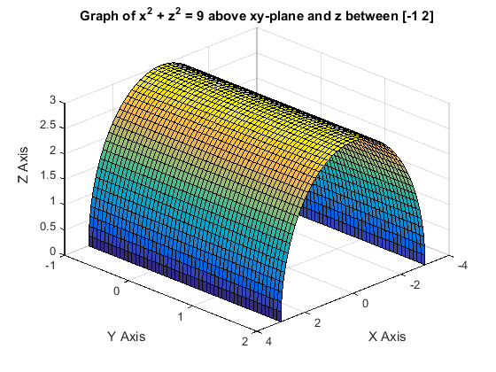
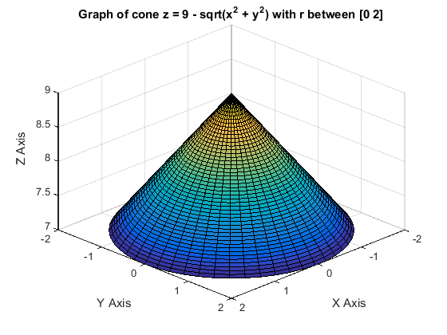
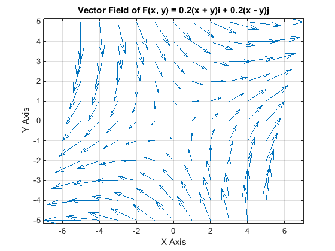

Emmanuel Taylor
MATLAB Project 3 MATH241 Section 0201 December 4, 2014
PROBLEM 1
Plot the portion of x^2 + z^2 = 9 above the xy-plane and between y = -1 and y = 2.
clear all; syms y theta; rbar = [3*cos(theta), y, 3*sin(theta)]; figure; ezsurf(rbar(1), rbar(2), rbar(3), [0, pi, -1, 2]); view([10 10 10]); xlabel 'X Axis' ylabel 'Y Axis' zlabel 'Z Axis' title 'Graph of x^2 + z^2 = 9 above xy-plane and z between [-1 2]'
PROBLEM 2
Plot the portion of the cone z = 9 - sqrt(x^2 + y^2) inside the cylinder r = 2.
clear all; syms r theta; rbar = [r*cos(theta), r*sin(theta), 9 - r]; figure; ezsurf(rbar(1), rbar(2), rbar(3), [0, 2, 0, 2*pi]); view([10 10 10]); xlabel 'X Axis' ylabel 'Y Axis' zlabel 'Z Axis' title 'Graph of cone z = 9 - sqrt(x^2 + y^2) with r between [0 2]'
PROBLEM 3
Plot the vector field F(x, y) = 0.2(x + y)i + 0.2(x - y)j using meshgrid (-5:1:5, -5:1:5).
clear all; syms x y; figure; [x, y] = meshgrid(-5:1:5, -5:1:5); quiver(x, y, 0.2*(x + y), 0.2*(x - y), 0) axis tight grid xlabel 'X Axis' ylabel 'Y Axis' title 'Vector Field of F(x, y) = 0.2(x + y)i + 0.2(x - y)j'
PROBLEM 4
A piece of wire is in the shape of the circle x^2 + y^2 = 1. The density at any point is given by delta(x, y) = x^2 + y^4. Find the mass of the wire.
clear all; syms x y z t; rbar = [sin(t), cos(t), 0]; f = x^2 + y^4; mylength = @(u) sqrt(u * transpose(u)); mag = simplify(mylength(diff(rbar, t))); sub = subs(f, [x, y, z], rbar); mass = int(sub * mag, t, 0, 2*pi)
mass = (7*pi)/4
PROBLEM 5
Evaluate the line integral int(x + y)ds where C is the straight line segment from (0, 1, 1) to (3, 2, 2).
clear all; syms x y z t; rbar = [t, t/3, t/3]; f = x + y; mylength = @(u) sqrt(u * transpose(u)); mag = simplify(mylength(diff(rbar, t))); sub = subs(f, [x, y, z], rbar); problem5 = int(sub * mag, t, 0, 3)
problem5 = 2*11^(1/2)
PROBLEM 6
Evaluate the line integral int yz*dx + yz*dy + y*dz where C is the top half of y^2 + z^2 = 4 in th yz=plane traveling from left to right.
clear all; syms x y z t; rbar = [0, -2*cos(t), 2*sin(t)]; f = [-4*cos(t)*sin(t), -4*cos(t)*sin(t), -2*cos(t)]; sub = subs(f, [x, y, z], rbar); problem6 = int(dot(sub, diff(rbar, t)), 0, pi)
problem6 = -2*pi
PROBLEM 7
Suppose sigma is the portion of the plane z = 10 - x - y inside the cylinder x^2 + y^2 = 1. The surface sigma is submerged in an electric field such that at any point the electric charge density is delta(x, y, z) = x^2 + y^2. Find hte total amount of electric charge on the surface.
clear all; syms r x y z theta; rbar = [r*cos(theta), r*sin(theta), 10 - r*cos(theta) - r*sin(theta)]; f = x^2 + y^2; mylength = @(u) sqrt(u * transpose(u)); mag = simplify(mylength(cross(diff(rbar, r), diff(rbar, theta)))); sub = subs(f, [x, y, z], rbar); charge = int(int(sub * mag, r, 0, 1), theta, 0, 2*pi)
charge = (pi*3^(1/2))/2
PROBLEM 8
A fluid is flowing through space following the vector field F(x, y, z) = yi - xj + zk. A filter is in the shape of the portion of the paraboloid z = x^2 + y^2 having 0 <= x <= 3 and 0 <= y <= 3, oriented inwards (and upwards). Find the rate at which the fluid is moving through the filter.
clear all; syms x y z; rbar = [x, y, x^2 + y^2]; F = [y, -x, z]; kross = simplify(cross(diff(rbar, x), diff(rbar, y))); sub = subs(F, [x, y, z], rbar); rate = int(int(dot(sub, kross), x, 0, 3), y, 0, 3)
rate = 54